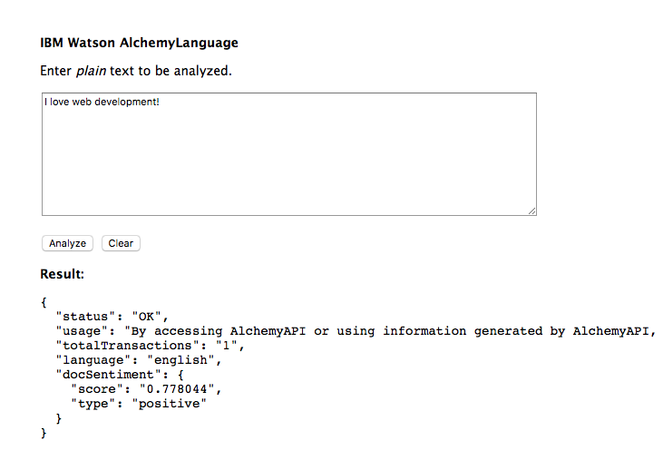

Now that we have covered all the steps needed to use the Sentiment Analysis API, we're finally ready for a live demo! Since the purpose of this guide is to teach you how to connect to and use the Sentiment Analysis API, we will not be covering the front-end technologies used to create the user interface of this demo (that's for another tutorial). If you want to take a look at the code, feel free to inspect the elements using your browser's Developer Tools. This demonstration uses the URLGetTextSentiment endpoint we discussed on the Request page. It then conducts a Sentiment Analysis on whatever text you input. Enjoy!
